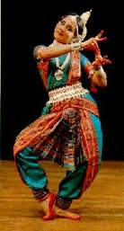

Dance is a performing art form consisting of purposefully selected sequences of human movement. This movement has aesthetic and symbolic value, and is acknowledged as dance by performers and observers within a particular culture.Dance can be categorized and described by its choreography, by its repertoire of movements, or by its historical period or place of origin. An important distinction is to be drawn between the contexts of theatrical and participatory dance,although these two categories are not always completely separate; both may have special functions, whether social, ceremonial, competitive, erotic, martial, or sacred/liturgical. Other forms of human movement are sometimes said to have a dance-like quality, including martial arts, gymnastics, cheerleading, figure skating, synchronised swimming, marching bands, and many other forms of athletics.
Kathakali.
Manipuri.
Kuchipudi.
Kathak.
Bharatnatyam.
Odisi.
Kathakali is major form of classical Indian dance. It is a "story play" genre of art, but one distinguished by the elaborately colorful make-up, costumes and face masks that the traditionally male actor-dancers wear.

Kathakali is a Hindu performance art in the Malayalam-speaking southwestern region of India (Kerala).
Manipuri dance, also known as Jagoi,is one of the major Indian classical dance forms.The roots of Manipuri dance, as with all classical Indian dances, is the ancient Hindu Sanskrit text Natya Shastra, with influences and the culture fusion between various local folk dance forms.According to the traditional legend, the indigenous people of the Manipur valley were the dance-experts revered as Gandharvas in the Hindu epics (Ramayana and Mahabharata).
Manipur, a state in northeastern India bordering with Myanmar (Burma), Assam, Nagaland and Mizoram.It is particularly known for its Hindu Vaishnavism themes, and exquisite performances of love-inspired dance drama of Radha-Krishna called Raslila.
Kuchipudi is one of the major Indian classical dances.Kuchipudi is a dance-drama performance, with its roots in the ancient Hindu Sanskrit text of Natya Shastra.It developed as a religious art linked to traveling bards, temples and spiritual beliefs, like all major classical dances of India. Evidence of Kuchipudi's existence in an older version are found in copper inscriptions of the 10th century, and by the 15th century in texts such as the Machupalli Kaifat.Kuchipudi tradition holds that Tirtha Narayana Yati – a sanyassin of Advaita Vedanta persuasion,and his disciple, an orphan named Siddhendra Yogi, founded and systematized the modern version of Kuchipudi in the 17th century.Kuchipudi largely developed as a Hindu god Krishna-oriented Vaishnavism tradition,and it is most closely related to Bhagavata Mela.
It originated in a village named Kuchipudi in the Indian state of Andhra Pradesh.
The term Kathak is derived from the Vedic Sanskrit word Katha which means "story", and Kathakar which means "the one who tells a story", or "to do with stories".Wandering Kathakars communicated stories from the great epics and ancient mythology through dance, songs and music. Kathak dancers tell various stories through their hand movements and extensive footwork, but most importantly through their facial expressions. Kathak evolved during the Bhakti movement, particularly by incorporating the childhood and stories of the Hindu god Krishna, as well as independently in the courts of north Indian kingdoms.Kathak is unique in having both Hindu and Muslim gharanas and cultural elements.Kathak performances include Urdu Ghazals and commonly use instruments brought during Muslim rule.
The origin of Kathak is traditionally attributed to the traveling bards of ancient
northern India known as Kathakars or storytellers.Kathak is found in three distinct forms, called "gharanas",
named after the cities where the Kathak dance tradition evolved – Jaipur, Banaras and Lucknow.
Odissi is traditionally a dance-drama genre of performance art, where the artist(s) and musicians play out a mythical story, a spiritual message or devotional poem from the Hindu texts, using symbolic costumes,body movement, abhinaya (expressions) and mudras (gestures and sign language) set out in ancient Sanskrit literature.Classical Odia literature & the Gitagovinda set to traditional Odissi music are used for the abhinaya. Odissi is learnt and performed as a composite of basic dance motif called the Bhangas (symmetric body bends, stance). It involves lower (footwork), mid (torso) and upper (hand and head) as three sources of perfecting expression and audience engagement with geometric symmetry and rhythmic musical resonance.An Odissi performance repertoire includes invocation, nritta (pure dance), nritya (expressive dance), natya (dance drama) and moksha (dance climax connoting freedom of the soul and spiritual release)
Odissi, also referred to as Orissi in older literature, is a major ancient Indian classical dance
that originated in the Hindu temples of Odisha – an eastern coastal state of India.
Bharatanatyam is the oldest classical dance tradition in India. It was nurtured in the temples and courts of southern India since ancient times.It is one of eight forms of dance recognized by the Sangeet Natak Akademi(the others being Kathak, Kuchipudi, Odissi, Kathakali, Mohiniyattam, Manipuri and Sattriya) and it expresses South Indian religious themes and spiritual ideas, particularly of Shaivism, Vaishnavism and Shaktism. Bharatanatyam content some types of banis. Bani or tradition is term used to describe the dance technique and style specific to the guru/school. These are named according to the village of the guru (with the exception of some banis).Bharatanatyam style is noted for its fixed upper torso, bent legs and knees flexed (Aramandi) combined with spectacular footwork, and a sophisticated vocabulary of sign language based on gestures of hands, eyes and face muscles.
Bharatanatyam also previously called Sadira Attam is a major form of Indian classical dance that is
indigenous to Tamil Nadu. Bharatanatyam is the oldest classical dance tradition in India